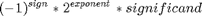
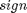
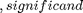

Contents
make_kv_maffine2
kv::ode_maffine2を使って計算するプログラムを生成する関数
function make_kv_maffine2(name, f, u, parameters, compiler)
引数
% name : 出力するディレクトリの名前 % f : 方程式 % u : 方程式の変数 % parameters : 方程式のパラメータ % compiler : 使うコンパイラ(省略可)
引数 compiler が省略されたときはVisual C++を使ってコンパイルする
if nargin <= 4 disp('the argument ''compiler'' of make_kv_maffine2 is empty'); disp('find available compiler'); compiler = compilers.auto_detect(); end
生成のための準備
- tools/MATLAB2C++のコンパイル
- kvのダウンロード
tools.prepare(compiler);
プログラムの生成
mkdir(name); source = fullfile(name, 'main.cpp'); executable = fullfile(name, 'exec.exe'); matlab2cpp = fullfile('tools', 'MATLAB2C++'); dim = length(f); disp(['generating source file (file name: ' source ')']); fp = fopen(source, 'wt');
プリプロセッサ
fprintf(fp, '// eliminate deprecation warnings\n'); fprintf(fp, '#if defined(_MSC_VER)\n'); fprintf(fp, '# define _CRT_SECURE_NO_WARNINGS\n'); fprintf(fp, '# define _SCL_SECURE_NO_WARNINGS\n'); fprintf(fp, '#endif\n\n'); fprintf(fp, '#include <cstdlib>\n'); fprintf(fp, '#include <iostream>\n'); fprintf(fp, '#include <fstream>\n'); fprintf(fp, '#include <utility>\n\n'); fprintf(fp, '#include <boost/numeric/ublas/vector.hpp>\n\n'); fprintf(fp, '#include <kv/affine.hpp>\n'); fprintf(fp, '#include <kv/rdouble.hpp>\n'); fprintf(fp, '#include <kv/ode-maffine2.hpp>\n'); fprintf(fp, '#include <kv/ode-param.hpp>\n'); fprintf(fp, '#include <kv/ode-callback.hpp>\n\n'); fprintf(fp, '#include <conv.hpp>\n\n');
方程式を表す関数オブジェクトクラスの生成
fprintf(fp, 'struct func{\n'); if length(parameters) > 0 % definition of members fprintf(fp, '\t::kv::interval<double> '); for i = 1:length(parameters) if i ~= 1 fprintf(fp, ', '); end fprintf(fp, char(parameters(i))); end fprintf(fp, ';\n\n'); % constructor fprintf(fp, '\tfunc(\n'); for i = 1:length(parameters) fprintf(fp, ['\t\tconst ::kv::interval<double> &' char(parameters(i))]); if i ~= length(parameters) fprintf(fp, ','); end fprintf(fp, '\n'); end fprintf(fp, '\t)\n'); fprintf(fp, '\t\t: '); for i = 1:length(parameters) if i ~= 1 fprintf(fp, '\t\t, '); end fprintf(fp, [char(parameters(i)) '(' char(parameters(i)) ')\n']); end fprintf(fp, '\t{\n\t}\n\n'); end fprintf(fp, '\ttemplate<typename T>\n'); fprintf(fp, '\t::boost::numeric::ublas::vector<T> operator()(\n'); fprintf(fp, '\t\tconst ::boost::numeric::ublas::vector<T> &u,\n'); fprintf(fp, '\t\tconst T &t\n'); fprintf(fp, '\t) const\n'); fprintf(fp, '\t{\n'); for i = 1:length(u) fprintf(fp, ['\t\tconst T &' char(u(i)) ' = u(' int2str(i - 1) ');\n']); end fprintf(fp, '\n'); fprintf(fp, ['\t\t::boost::numeric::ublas::vector<T> return_value(' int2str(dim) ');\n\n']); for i = 1:length(f) [status, out] = system([matlab2cpp ' "' char(f(i)) '"']); if status ~= 0 disp(['failed to parse function "' char(f(i)) '".']); disp(out); return end fprintf(fp, ['\t\treturn_value(' int2str(i - 1) ') = ' out ';\n']); end fprintf(fp, '\n\t\treturn return_value;\n'); fprintf(fp, '\t}\n'); fprintf(fp, '};\n\n');
main関数の生成
% argv: executable output order N ep-reduce ep-reduce-limit % inf(t_last) sup(t_last) % inf(u0(1)) sup(u0(1)) ... % inf(param_1) sup(param_1) ...
区間は下限と上限をそれぞれ

のように3つの整数 (符号) (指数部) (仮数部) に分解して入出力する
fprintf(fp, 'int main(int argc, char **argv)\n'); fprintf(fp, '{\n'); fprintf(fp, ['\tif(argc < ' int2str(6 + 2 * 3 * (1 + length(u) + length(parameters))) '){\n']); fprintf(fp, '\t\t::std::cout << "invalid argument" << ::std::endl;\n'); fprintf(fp, '\t\treturn 1;\n'); fprintf(fp, '\t}\n\n'); fprintf(fp, '\t::std::ofstream ofs(argv[1]);\n'); fprintf(fp, '\tif(!ofs){\n'); fprintf(fp, '\t\t::std::cout << "cannot open file ''" << argv[1] << ''\\'''' << ::std::endl;\n'); fprintf(fp, '\t\treturn 1;\n'); fprintf(fp, '\t}\n\n'); fprintf(fp, '\tofs.setf(ofs.scientific);\n'); fprintf(fp, '\tofs.precision(17);\n\n'); fprintf(fp, '\t::kv::interval<double> t_last(\n'); fprintf(fp, '\t\t::todouble(::std::strtol(argv[6], nullptr, 10), ::std::strtol(argv[7], nullptr, 10), ::std::strtoull(argv[8], nullptr, 10)),\n'); fprintf(fp, '\t\t::todouble(::std::strtol(argv[9], nullptr, 10), ::std::strtol(argv[10], nullptr, 10), ::std::strtoull(argv[11], nullptr, 10)));\n\n'); fprintf(fp, ['\t::boost::numeric::ublas::vector<::kv::affine<double>> u(' int2str(length(u)) ');\n\n']); for i = 1:length(u) fprintf(fp, [ ... '\tu(' int2str(i - 1) ') = ::kv::interval<double>(\n' ... '\t\t::todouble(::std::strtol(argv[' int2str(i * 6 + 6) '], nullptr, 10), ::std::strtol(argv[' int2str(i * 6 + 7) '], nullptr, 10), ::std::strtoull(argv[' int2str(i * 6 + 8) '], nullptr, 10)),\n' ... '\t\t::todouble(::std::strtol(argv[' int2str(i * 6 + 9) '], nullptr, 10), ::std::strtol(argv[' int2str(i * 6 + 10) '], nullptr, 10), ::std::strtoull(argv[' int2str(i * 6 + 11) '], nullptr, 10)));\n\n']); end bias = 6 * length(u) + 5; for i = 1:length(parameters) fprintf(fp, [ ... '\t::kv::interval<double> ' char(parameters(i)) '(\n' ... '\t\t::todouble(::std::strtol(argv[' int2str(i * 6 + bias + 1) '], nullptr, 10), ::std::strtol(argv[' int2str(i * 6 + bias + 2) '], nullptr, 10), ::std::strtoull(argv[' int2str(i * 6 + bias + 3) '], nullptr, 10)),\n' ... '\t\t::todouble(::std::strtol(argv[' int2str(i * 6 + bias + 4) '], nullptr, 10), ::std::strtol(argv[' int2str(i * 6 + bias + 5) '], nullptr, 10), ::std::strtoull(argv[' int2str(i * 6 + bias + 6) '], nullptr, 10)));\n\n']); end clear bias; fprintf(fp, '\t::outdouble(0.0, ofs);\n'); fprintf(fp, '\tofs << '','';\n'); fprintf(fp, '\t::outdouble(0.0, ofs);\n'); for i = 1:length(u) fprintf(fp, '\tofs << '','';\n'); fprintf(fp, ['\t::outdouble(to_interval(u(' int2str(i - 1) ')).lower(), ofs);\n']); fprintf(fp, '\tofs << '','';\n'); fprintf(fp, ['\t::outdouble(to_interval(u(' int2str(i - 1) ')).upper(), ofs);\n']); end fprintf(fp, '\tofs << ::std::endl;\n\n'); fprintf(fp, '\tint order = ::std::strtol(argv[2], nullptr, 10);\n'); fprintf(fp, '\tint itermax = ::std::strtol(argv[3], nullptr, 10);\n'); fprintf(fp, '\tint ep_reduce = ::std::strtol(argv[4], nullptr, 10);\n'); fprintf(fp, '\tint ep_reduce_limit = ::std::strtol(argv[5], nullptr, 10);\n\n'); fprintf(fp, '\tfunc f('); for i = 1:length(parameters) if i ~= 1 fprintf(fp, ', '); end fprintf(fp, char(parameters(i))); end fprintf(fp, ');\n'); fprintf(fp, '\t::kv::interval<double> t1(0.0);\n\n'); fprintf(fp, '\tauto param = ::kv::ode_param<double>()\n'); fprintf(fp, '\t .set_order(order)\n'); fprintf(fp, '\t .set_autostep(false)\n'); fprintf(fp, '\t .set_ep_reduce(ep_reduce)\n'); fprintf(fp, '\t .set_ep_reduce_limit(ep_reduce_limit);\n'); fprintf(fp, '\tint r;\n\n'); fprintf(fp, '\tfor(int i = 0; i < itermax; i++){\n'); fprintf(fp, '\t\t::kv::interval<double> t2 = t_last * (i + 1) / itermax;\n\n'); fprintf(fp, '\t\tr = ::kv::ode_maffine2(\n'); fprintf(fp, '\t\t\tf,\n'); fprintf(fp, '\t\t\tu,\n'); fprintf(fp, '\t\t\tt1,\n'); fprintf(fp, '\t\t\tt2,\n'); fprintf(fp, '\t\t\tparam);\n\n'); fprintf(fp, '\t\t::outdouble(t2.lower(), ofs);\n'); fprintf(fp, '\t\tofs << '','';\n'); fprintf(fp, '\t\t::outdouble(t2.upper(), ofs);\n'); for i = 1:length(u) fprintf(fp, '\t\tofs << '','';\n'); fprintf(fp, ['\t\t::outdouble(to_interval(u(' int2str(i - 1) ')).lower(), ofs);\n']); fprintf(fp, '\t\tofs << '','';\n'); fprintf(fp, ['\t\t::outdouble(to_interval(u(' int2str(i - 1) ')).upper(), ofs);\n']); end fprintf(fp, '\t\tofs << ::std::endl;\n\n'); fprintf(fp, '\t\tif(r != 2) break;\n\n'); fprintf(fp, '\t\tt1 = t2;\n'); fprintf(fp, '\t}\n\n'); fprintf(fp, '\treturn (r != 0) ? 0 : 2;\n'); fprintf(fp, '}\n'); fclose(fp);
コンパイル
disp(['compiling ' source ' ...']); [status, out] = compiler({source}, executable); if status ~= 0 disp('compilation failed.'); disp(out); else disp('compilation succeeded.'); end delete('*.obj');
end